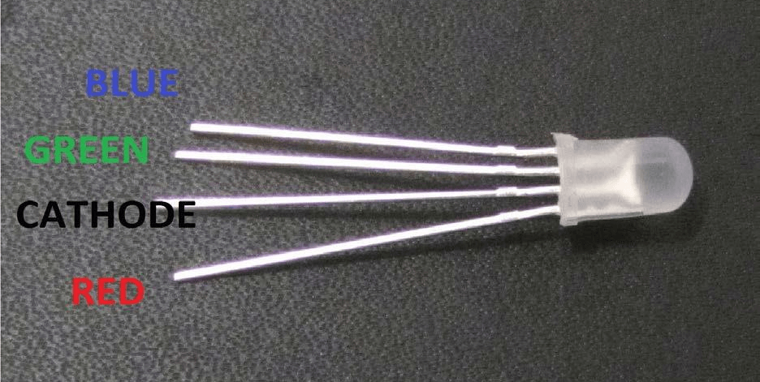
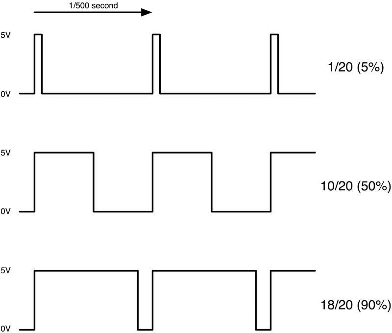

Los LED RGB son una forma divertida y fácil para agregar color a nuestros proyectos. Puesto que es como
regular 3 LED en uno, además el uso y conexión no es muy diferente a lo visto anteriormente.
Vienen en 2 versiones: ánodo común o cátodo común.
Ánodo común utiliza 5V en el pin común, mientras que el cátodo común se conecta a tierra.
Como con cualquier LED, tenemos que conectar algunas resistencias en línea (3 total) así podremos limitar
la corriente absorbida.
En nuestro script, se comenzará con el LED en el estado de color rojo, después se pasará a color verde,
luego se pasa a color azul y finalmente se vuelve a poner en color rojo.
(1) x Placa Arduino
(1) x Protoboard
(4) x M M cables (cables de puente de macho a macho)
(1) x LED RGB
(3) x Resistencias de 220 ohmios
A primera vista los LEDs RGB (rojo, verde y azul) parecen LEDs comunes, sin embargo, dentro hay realmente
tres LEDs, uno rojo, uno verde y uno azul.
Controlando el brillo de cada uno de los LEDs individuales, podemos mezclar prácticamente cualquier color
que deseemos. Mezclamos colores del mismo modo que lo haríamos al mezclar pintura en una paleta, en este caso
ajustando el brillo de cada uno de los tres LEDs.
La manera difícil para hacer esto sería usar diferentes resistencias (o resistencias variables) como hicimos
con el LED en el tema 2, pero esto es un mucho trabajo. Afortunadamente para nosotros, arduino tiene una función
analogWrite que se pueden utilizar en los pines marcados con un ~, en lo que podemos regular la
cantidad de energía apropiada para los LED.
El LED RGB tiene cuatro patillas conectoras, hay una patilla a la conexión positiva de cada uno de los LEDs
individuales y un patilla única que está conectada a los tres lados negativos de los LEDs.

Su esquema eléctrico es este:
En las fotografías podemos ver 4 diodos LED, cada una de las patillas con colores verde, azul o rojo se llaman
ánodos y siempre se conectarán al polo positivo «+». El cátodo va al polo negativo
«-» (tierra), si se conecta de una forma diferente el LED no se encenderá.
La conexión negativa del diodo LED es la patilla más larga de las cuatro patas y se conectará a la tierra.
Cada LED dentro del diodo, requiere su propia resistencia de 220Ω para prevenir demasiada corriente que
fluya a través de él. Los tres conductores del positivo de los LEDs (uno rojo, uno verde y uno azul) están
conectados a los pines de salida.
La razón por la que podemos mezclar cualquier color, es por que el ojo y el cerebro procesan las cantidades de
rojo, verde y azul, para luego convertirlas en un espectro de color.
En cierto modo, mediante el uso de los tres LEDs, estamos jugando un truco en el ojo. Esta misma idea se utiliza
en televisores, donde la pantalla LCD tiene puntos de color rojo, verde y azul que componen cada píxel.
Si establece el brillo de los tres LEDs al mismo tiempo, el color generado de la luz será blanco. Si apagamos el LED azul y dejamos sólo los LEDs rojo y verde con mismo brillo, la luz generada será amarilla. Y así con el resto de combinaciones.
Modulación de ancho de pulso (Pulse Width Modulation) es una técnica para el control de potencia, que utilizaremos para controlar el brillo de cada uno de los LEDs. El siguiente diagrama muestra la señal de los PWM pins en la placa de Arduino.

Aproximadamente cada 1/500 de segundo, la salida PWM producirá un pulso (mostrado en la gráfica como un rectángulo).
La duración de este pulso es controlada por la función analogWrite. Así analogWrite(0)
no producirá ningún pulso y analogWrite(255) producirá un pulso continuo que dura toda la gráfica.
Si especificamos un valor en el analogWrite que está en algún lugar entre 0 y 255, se producirá
lo que conocemos como un tren de pulsos.
Una vez efectuado todo el cableado, descargaremos el script del siguiente link y lo cargaremos como hemos aprendido.
En las primeras líneas del script especificamos qué pins van a corresponder a cada color.
// Definimos los pins
#define PinRojo 6
#define PinAzul 5
#define PinVerde 3
El siguiente paso es la función void setup( ). Como aprendimos en lecciones anteriores, la función setup solo se ejecutará una vez que el arduino se haya reseteado. Ahora se define el uso de cada pin.
void setup()
{
pinMode(led_rojo, OUTPUT);
pinMode(led_verde, OUTPUT);
pinMode(led_azul, OUTPUT);
digitalWrite(led_rojo, HIGH);
digitalWrite(led_verde, LOW);
digitalWrite(led_azul, LOW);
}
Por último se define la función loop( )
ValorRojo = 255; // Elegimos un valor entre 1 y 255
ValorVerde = 0;
ValorAzul = 0;
Esta función tiene tres argumentos, uno para el brillo del LED rojo, otro para el verde y otro para el azul. En cada caso, el número que pongamos estará en el rango 0 a 255, donde 0 significa apagado y 255 significa brillo máximo.
analogWrite(PinRojo, ValorRojo);
analogWrite(PinVerde, ValorVerde);
La función analogWrite entonces, se usa para ajustar el brillo de cada LED. Si nos fijamos en la función 'loop' se puede ver que se ajusta el valor para luz roja. También podemos ver cómo se hace una pausa antes de saltar al siguiente color.
#define TiempoEspera 10 // Tiempo de desvanecimiento entre colores
delay(TiempoEspera);
Deberíamos tener algo como esto, si no es así revisa los pasos anteriores.
En este tema hemos visto como llevamos el LED desde el color rojo al color azul.
Ahora, además de llevar el LED desde el color rojo al azul, tenemos que pasar también por los colores que llevan del
azul al verde y del verde otra vez al rojo.